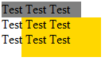
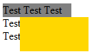
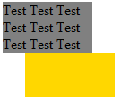

根据 CSS 2.1 规范的描述，一个元素的 'overflow' 特性的默认值为 'visible'，在这种情况下，溢出该元素的内容仍然可见。
关于 'overflow' 的详细资料，请参考 W3C CSS2.1 规范：11.1.1 Overflow: the 'overflow' property
在 IE7(S) 中一个元素溢出的部分会被触发了 hasLayout 特性的元素遮盖。
在 IE7(S) 中溢出容器的内容可能被其他具有背景色的布局块遮挡，与其它浏览器中的显示效果产生差异。
| IE7(S) |
|---|
'overflow' 特性定义了当一个块级元素的内容溢出该元素的内容区域时是否被剪切，它的默认值是 'visible'，即不进行剪切，这可能导致该元素的内容在该元素的 content box 外被渲染。但是在 IE7(S) 中，hasLayout 的元素这将遮盖住这些溢出的内容。
分析以下代码：
<div id="d1" style="height:20px;width:100px;background:gray;"> Test Test Test
Test Test Test Test Test Test </div> <div id="d2"
style="margin-left:25px;height:50px;width:100px;background:gold;"></div>
两个 DIV 标记均设置了宽高、他们都是块级元素，因此在 IE 浏览器中都 hasLayout。
第一个 DIV 内 'overflow' 没有设置，使用默认值 'visible'，其内元素将溢出容器显示。第二个 DIV 设定了背景色，根据规范说明这部分溢出的内容应该显示在他之上。
实际显示结果如下：
| Firefox Chrome Safari Opera IE8(S) | IE7(S) | IE6 IE7(Q) IE8(Q) |
|---|---|---|
|  |  |  |
合理设置元素的 'width'、'height' 和 'overflow' 特性，避免内容溢出容器。
| 操作系统版本: | Windows 7 Ultimate build 7600 |
|---|---|
| 浏览器版本: |
IE6
IE7 IE8 Firefox 3.6 Chrome 4.0.302.3 dev Safari 4.0.4 Opera 10.51 |
| 测试页面: | haslayout_stack_level.html |
| 本文更新时间: | 2010-07-19 |
overflow visible hasLayout 溢出 遮盖